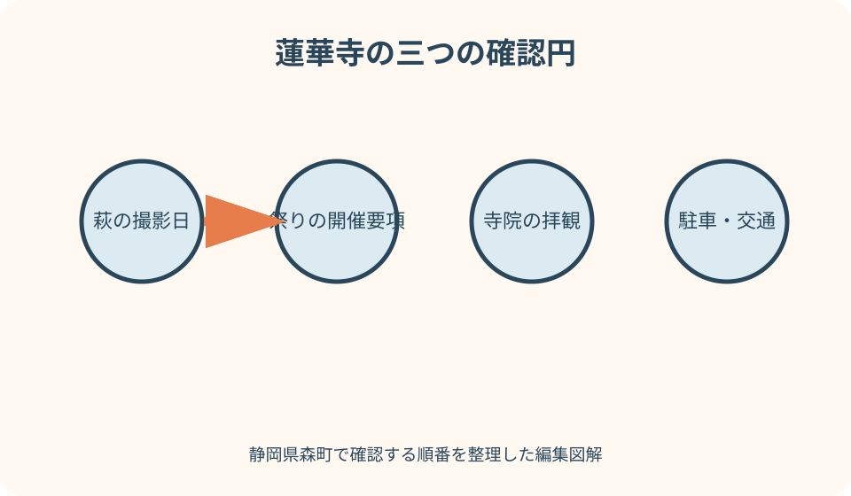
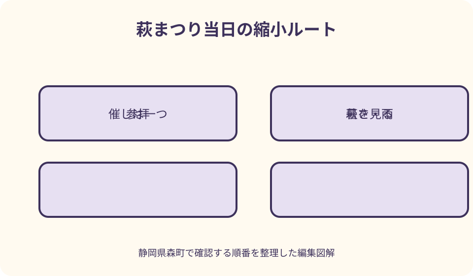

季節の花・寺院・萩まつり｜最終確認 2026-08-10
静岡県森町・蓮華寺の萩まつりと見頃｜開花と開催情報の確かめ方
森町森の蓮華寺は、観光協会から『萩の寺』として案内される寺院です。萩の花が開いていることと、萩まつりが開催されることは別の事実です。花は気象で進み、祭りは主催者の決定で内容や実施が変わります。参拝だけの日、花を見る日、催しへ参加する日を分け、当年情報で選びましょう。

編集イラスト蓮華寺・萩・萩まつりを三つに分ける
観光協会の寺院案内では、蓮華寺の所在地、問合せ先、拝観に関する基本情報が掲載されています。まず寺院へ参拝できる通常の条件を確認し、その上に花と催事の情報を重ねます。
萩は生きた植物で、枝ごと、場所ごとに花の付き方が変わります。寺全体を一語で満開と捉えず、直近の写真がどの区域を写したものかまで見ます。
萩まつりは花の自然現象ではなく、主催者が日程と内容を決める催しです。花が咲けば自動的に祭りが始まるわけではなく、祭りの日だけ萩が咲くわけでもありません。
観光協会の年間行事は候補を知る索引として使います。例年の曜日表現を今年の確定日へ読み替えず、当年の個別ページ、チラシ、寺院への問合せで決めます。
旅の主目的も三つから一つ選びます。静かに参拝する、萩を観察する、祭りの催しを見るでは、適する日、人出、滞在時間が異なります。
萩の開花を確認する読み方
開花写真を見るときは、投稿された日より撮影日を優先します。再掲写真や過去の紹介画像もあるため、本文に当年と撮影時点が示されているかを確かめます。
萩は枝が細く、花が点在して咲く姿もあります。画面いっぱいの色だけを見頃の条件にせず、蕾、開花した枝、散った花の割合を写真で見分けます。
寺の入口、庭、斜面など環境が異なれば状態もそろわない可能性があります。特定の一枝の接写を境内全体の代表と考えず、広い画角の写真も探します。
雨、風、暑さが撮影後に続いた場合は、花の状態が変わります。最新画像から訪問日までの天気を確認し、見頃という過去形の説明を将来の保証にしません。
開花発信が見つからないときは、第三者の去年の投稿で穴を埋めません。蓮華寺または観光協会の問合せ先へ、現在の状態と見学可能な区域を簡潔に尋ねます。
萩まつりは当年の開催要項を探す
最初に当年の開催告知が出ているかを確認します。ページタイトル、更新日、本文中の年、主催者を見て、検索結果に残る過去回と取り違えません。
日程だけでなく、開始・終了、受付、催しの場所、参加費や予約、雨天時の変更を読みます。音楽、茶席、奉納など過去に紹介された内容が次回もあるとは限りません。
催しごとに参加条件が異なる場合があります。祭りへの来場が自由でも、席、体験、呈茶、法要への参列に受付が必要かもしれないため、個別欄を確認します。
中止判断をどこで発表するかも保存します。寺院公式サイト、観光協会、電話、SNSのうち最終情報を出す媒体が示されていれば、当日の確認先を一つに絞れます。
当年告知が公開されていなければ、年間行事の例年表現だけで開催を断定しません。萩を見に行く通常参拝へ切り替えるか、発表後に日を選びます。
拝観・料金・寺院区域を確認する
観光協会の蓮華寺案内には拝観に関する基本情報がありますが、萩まつり当日の特別な受付や有料区域まで保証するものではありません。当年告知を追加します。
境内へ自由に入れるという表現があっても、堂内、寺宝、祈祷、御朱印、庭の一部が同じ条件とは限りません。立入表示と寺院の案内を優先します。
料金が必要な場合は、何への料金かを区別します。拝観、特別公開、催し、茶席、物販を一つの入場料だとまとめず、支払い先と対象を確かめます。
寺院行事に参加する服装として、特別な正装を推測する必要はありませんが、肩や膝を過度に露出しない、帽子を堂内で外すなど現地の指示を守れる準備をします。
萩の枝が通路へ伸びる区域では、近道のため植込みをまたぎません。花に触れずに通れる幅を選び、混んでいれば一方が待って譲ります。

駐車は祭りの日と通常日で分ける
寺院案内に駐車場ありと書かれていても、祭りの日の来場者全員が停められる意味ではありません。利用可能台数、入口、臨時区画、満車時の扱いを当年資料で確認します。
蓮華寺は森町中心部の観光地図に掲載されています。住宅、学校、町の施設が近い地区では、目的地以外の駐車場を無断で祭り用に使わないことが重要です。
交通整理がある場合は係員の誘導を優先し、以前停めた区画へ直接進みません。歩行者が増えるため、門前で同乗者を降ろす行為も指定場所がなければ避けます。
満車なら道路上で空きを待つのではなく、主催者が案内する代替へ進みます。代替が示されていなければ、来場時間を変えるか、通常日の参拝へ延期します。
帰りは祭り終了直後へ集中する可能性があります。急いで車列へ入らず、歩行者が落ち着くまで待てる場所があるか、運転者の疲れがないかを見ます。
秋でも暑さと日差しを軽く見ない
萩の季節が暦の上で秋でも、日中の境内が涼しいとは限りません。訪問日の気温、湿度、暑さ指数を確認し、真夏と同じように飲料と休憩を準備する日があります。
祭りでは開始前や催しの間に待つ時間が生じます。木陰や椅子が必ず空くと考えず、立ち続ける時間の上限を同行者と決めます。
帽子は堂内や法要の場では外せるようにし、日傘は人が集まる区域で周囲へ当てないよう畳みます。小さな扇子や首元を冷やす物も通路を塞がず使えます。
体調が悪くなったら祭りの主要な催しを待ちません。受付または係員に出口と休める場所を尋ね、同行者全員で移動します。
子どもや高齢者がいる日は、祭りと周辺散策を同日に詰めません。萩、参拝、一つの催しまでにすれば、気温が上がったとき予定を縮められます。
雨と足元で参拝範囲を変える
雨で萩の枝が垂れると、乾いた日より通路幅が狭く感じられる場合があります。傘と枝、人の肩が重ならないよう、狭い場所では一人ずつ通ります。
境内の石、土、苔、落葉は濡れ方で滑りやすくなります。入口の路面だけを見て奥も安全と判断せず、係員へ歩きにくい区域がないか聞きます。
滑りにくい靴を選び、長い裾や手提げ袋を減らします。片手を荷物、片手を傘で塞がず、必要な物は背負える袋へまとめます。
萩まつりが雨天実施でも、屋外の全催しが同じ内容で行われるとは限りません。会場変更、時間変更、縮小の最新発表を出発前と到着後に確認します。
強い雨や雷なら、寺の軒下へ自由に避難できると想定しません。主催者の指示に従い、中止または退出となれば速やかに帰路へ移ります。
萩を撮るときの距離と参拝マナー
萩は細い枝が重なり、近くで撮るほど手で動かしたくなります。枝を引き寄せる、花房を持つ、通路側へ折り曲げる行為はせず、背景と焦点距離を変えます。
寺院の堂宇や仏像が背景に入る場合、撮影できる区域かを確認します。花が撮影自由でも、堂内や法要中の撮影が同じ扱いとは限りません。
祭りの演奏や奉納を撮るときは、主催者の撮影案内、出演者、観客への配慮が必要です。最前列へ移動して視界を遮る、長時間動画を頭上で構えることを避けます。
三脚、レフ板、モデル撮影、商用利用、ドローンは、手持ちの記念写真より占有範囲が大きくなります。寺院と主催者の許可を事前に確認します。
SNS公開前に、参拝者の顔、子ども、車両番号、受付名簿、御朱印の個人情報を見直します。現地で撮影できても公開範囲が無制限とは考えません。
公共交通では森町中心部から考える
蓮華寺は観光協会の森町中心部案内に載る寺院です。まず遠州森駅、町役場周辺、蓮華寺の位置を一枚の地図で見て、徒歩の起点を定めます。
天浜線を使う人は遠州森駅または旅程に合う駅の最新時刻、運賃、駅設備を事業者公式で確認します。地図上の近さだけで降車駅を決めません。
町営バスや路線バスを組み合わせる場合は、運行主体、運行日、乗り場、帰りの方向を別々に確認します。祭りのための臨時便があると推測しません。
徒歩では暑さ、雨、祭りの人流を足します。通常日の所要目安より長くかかる前提で、寺に着く時刻と駅へ戻る時刻の両方を決めます。
帰りの列車を二つ選び、早い便を目標に寺を出ます。祭りの最後まで滞在する場合は、遅い便でも自宅側の接続が成立するかを出発前に確認します。
タクシーを代案にする人は、祭り終了後にその場で呼べば足りると考えません。事業者へ配車の可否、迎車地点、混雑時の見込みを事前に尋ね、寺の門前や歩行者動線を乗車場所へ指定しないようにします。
周辺散策は歴史の散歩道と町なかを分ける
観光協会は蓮華寺から大洞院へ続く歴史の散歩道を紹介しています。これは寺の隣を少し歩く付録ではなく、独立したハイキングとして時間と装備が必要です。
萩まつりの日に歴史の散歩道を追加すると、祭りの待ち時間、暑さ、山道、帰路が重なります。初回は蓮華寺と町なかだけにし、散歩道は別日にします。
町なかを組み合わせる場合は、遠州森駅へ戻る方向にある食事、菓子、歴史文化の候補を一つ選びます。営業は各店や施設へ当日に近い情報で確認します。
別の花の寺へ車で移る場合も、相手先の当年開花と受入条件を確認します。萩が見頃外だったからといって、次の寺が見頃とは限りません。
周辺を一つ削ることで、蓮華寺の由来や寺宝の案内を読む時間が生まれます。花の写真地点数ではなく、寺院で理解できたことを旅の成果にします。
見頃外・祭り中止・混雑時の代案
萩が咲き始めなら枝や葉と少数の花を観察し、終盤なら残る花を探し回らず参拝を中心にします。過去の満開写真と同じ画面を成功条件にしません。
祭りが中止でも寺院の通常参拝が可能とは限らないため、中止告知の本文を読みます。荒天で境内自体への来訪を控える案内なら従います。
花は見頃でも催しがない日は、静かな参拝日として選べます。祭りの演奏や茶席を期待する人は、未開催を現地で補おうとせず、次回の公式発表を待ちます。
駐車や境内が混雑していれば、無理に写真だけ撮って退出せず、町なかの営業確認済み候補へ切り替えます。時間を置いて戻る場合は拝観可能な時間も再確認します。
公共交通の運休や遅れがあれば、祭りへ間に合わせるためタクシーが必ず捕まると考えません。配車可否を確認できなければ、町なかへ縮めるか訪問を取りやめます。
良い点
蓮華寺は森町中心部の寺院として観光地図へ組み込みやすく、萩、参拝、町歩きを同じ地区で考えられます。遠い花の名所を連続して回らなくても一日を作れます。
観光協会には寺院の基本案内、年間行事、中心部地図、歴史の散歩道が別々に用意されています。目的に応じて情報を深められる点が便利です。
花を見る通常日と、地域の催しに触れる萩まつりの日を選べます。人混みが苦手な人と、行事を見たい人が同じ基準で日を決めなくてよい場所です。
萩だけでなく寺院の歴史や参拝が主目的になり得ます。花の進みが予想と違っても、訪問価値を一つに依存させずに済みます。

注文したい点
萩まつりの当年ページに、開催可否、催し一覧、雨天変更、拝観区域、駐車、公共交通を一枚でまとめると、過去の行事説明との混同を減らせます。
開花写真には撮影日と境内位置を付け、祭り開催情報とは別欄にしてほしいところです。祭りの日程が花の見頃予測に見える誤解を防げます。
中心部地図から蓮華寺の徒歩入口、来訪者用駐車場、遠州森駅への推奨経路を確認できれば、住宅地で迷う車と歩行者を減らせます。
撮影、三脚、堂内、御朱印、催しの録画について、寺院と祭り主催者のルールが異なる場合は区別して表示してほしいです。
中止発表を出す媒体と判断時点を当年チラシへ明記すれば、遠方の来訪者が前夜の古い案内だけで出発せずに済みます。
代案・結論
当年の萩まつり告知がなければ、祭り参加を前提に交通や宿を確定しません。蓮華寺への通常参拝を寺院へ確認し、催しなしの行程へ切り替えます。
花の状態が合わなくても、参拝と町なか散策に目的を移せます。花を求めて別地区へ急ぐ場合は、次の場所の開花、駐車、受付を一から確認します。
雨天は境内を短く、暑い日は祭りの催しを一つ、混雑日は別時間または別日というように、問題ごとに予定を減らします。
結論として、萩の撮影時点、祭りの当年開催要項、寺院の拝観、駐車または往復交通を別々に確認し、四つがそろって初めて当日の計画を確定します。
大石の視点
萩まつりの記事で最も避けたいのは、例年の曜日を今年の確定日として広めることです。年間表は候補を知る道具であり、主催者の当年告知に置き換わるものではありません。
私は現地で催しを見たと装い、琴の音が美しかったなどの感想を書きません。過去にあった内容と、次回確定した内容を分け、読者が自分の日を判断できる材料だけを示します。
萩の枝は写真の小道具ではなく、寺が育て、次の花へつなぐ植物です。人が途切れるまで枝を寄せるより、通路を譲り、撮れない一枚を残す方が誠実です。
祭りがなくても萩は咲き、花が少なくても寺院はそこにあります。三つを分けて理解すれば、催事の中止や自然のずれを訪問全体の失敗にしません。
森町の中心部で一か所を丁寧に訪ねることは、何か所も回るより情報確認が少なく、安全にもつながります。帰りを守る余白まで含めて、蓮華寺の日を完成させたいです。
公式情報・確認先
掲載内容は次の一次情報を基礎に整理しました。営業、料金、催し、交通は変わるため、出発前または手続き前にリンク先で最新情報を確認してください。